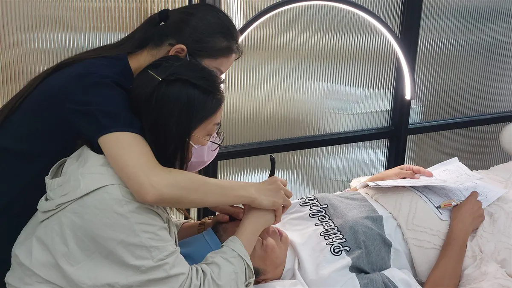

The Bojin Journal · The method
Dry or With Oil? A Bojin Guide to Slip, Pressure, and Skin Comfort

You want this to be simple: wash your face, pick up the tool, take a few quiet minutes. Then it catches against your skin. Is your face too dry? Do you need another product? Or are you pressing more than you realized?
For a gliding placement, do not drag the tool across catching skin. Pause and review the preparation, pressure, and angle. Oil can be one way to provide glide, but it is not the only option, and a slippery surface does not make every movement comfortable or appropriate.
What slip means here
Slip is the practical feel of the contact: can the tool move as demonstrated without pulling at the surface, while you can still guide it? It is not a measure of how deeply the tool reaches or how effective the session will be.
This page is about gliding contact. Some demonstrated placements involve a different kind of contact, so do not turn every instruction into a sliding stroke. Bojin and gua sha are distinct practices; a shared discussion of glide does not make their techniques interchangeable.
Cleveland Clinic's facial gua sha guidance includes applying moisturizer to help the tool glide and keeping contact gentle. That is useful background for thinking about friction, not a validated Bojin protocol or proof of cosmetic results.
Oil is not the whole decision
A familiar oil or moisturizer may suit the gliding technique you have been shown. The label matters less than how your skin tolerates that specific product and whether it gives you comfortable control. Not every cream stays slippery, and not every oil feels comfortable on every person.
There is no universal “two or three drops per cheek” rule here. Products spread differently, and the area and movement matter. Follow the product instructions and the demonstrated technique; do not coat your face until the tool is difficult to control.
There is also no fixed age when everyone needs more oil. If your skin feels different from a few years ago, pay attention to that experience without treating your birthday as a product prescription. For choosing between products, see oil or cream for Bojin. This page's job is to help you decide whether the contact is comfortable.
Catching and irritation need different decisions
The tool catches, but your skin is comfortable
Put the tool down. Check the placement and angle, and whether you have begun to squeeze or press harder. If the technique calls for glide, review whether the familiar product you are using still provides it. You can adjust the setup or leave the routine for another day; you do not have to finish.
The tool slides, but your skin stings or itches
Stop. Adding another layer is not a way to decide whether the reaction is harmless. The American Academy of Dermatology's product-testing guidance explains that a product reaction calls for washing the product off and discontinuing it. It also describes testing new products before introducing them into a routine.
The tool feels too slippery to guide
Put it down rather than chase it with a tighter grip. More product does not automatically mean less strain. Reassess the amount and whether this product suits the demonstrated contact. If your hand is sore or control is difficult, read when to pause or adjust for hand comfort.
A five-step check before gliding contact
- Check whether your skin is ready If skin is already irritated, broken, sore, or unusually swollen, skip tool work. If a condition or recent procedure makes you unsure, ask your treating professional first.
- Keep preparation familiar Use clean hands and a clean, intact tool. If the demonstrated technique calls for glide, choose a product your skin already tolerates rather than trying a new active ingredient during the session.
- Review the contact before moving Follow one demonstrated placement and angle. Use comfortable contact and do not press harder to make a tool move across a catching area.
- Pause when control changes If the tool catches or feels too slippery to guide, put it down. Review the amount, angle, and pressure before deciding whether to continue. Pain, stinging, or itching means stop rather than make another pass.
- Let comfort decide the finish There is no required number of strokes or visible flush to achieve. End the session when you choose, and do not use more product or extra passes to chase a result.
What a glide product cannot promise
It cannot tell you that soreness is only friction, make strong pressure appropriate, or establish better serum absorption, a lasting lift, or a particular result by tomorrow. Product tolerance and the way you use a tool remain separate questions.
A face can look or feel different for many reasons. This guide does not identify the cause of redness or swelling from appearance alone. For more on your next step after discomfort, read reactions and warning signs.
Quick answers
Do I need oil for Bojin?
Oil is not the only possible glide product. For a demonstrated gliding placement, consider a product your skin already tolerates and that suits the instruction. A familiar moisturizer may be an option; do not assume every cream or oil gives suitable control.
Can I glide a tool over bare, dry skin?
Do not force a moving tool across skin that catches or pulls. Pause and review the placement, pressure, and preparation. This guide concerns gliding contact; it is not a rule to slide every Bojin placement or add oil to every technique.
How many drops of oil should I use?
There is no single dose this guide can prescribe for every product, area, and person. Follow the product directions and demonstrated technique, using only what allows comfortable, controlled contact. More product is not automatically better.
Should I add more oil if my skin stings?
No. Stop tool contact. If a product seems to be causing a reaction, gently wash it off and stop using it, following the dermatology guidance linked here. Persistent, severe, or worrying symptoms need professional advice.
Does skin over 55 always need more oil?
Age alone does not tell you which product or amount will suit you. Use your current skin tolerance, product instructions, and the technique you have been shown. Do not use an age cutoff to explain irritation or to justify more pressure.
Not sure where to begin?
The one-minute Face Tension Profile asks about how your face feels. It is a self-check, not a diagnosis of irritation or a product recommendation. You can explore it without starting a tool routine today.
Try the 1-minute self-check →Yu-Ting Lan is a Taiwan-based international bojin instructor and the founder of Héhé Studio. She has taught her bojin method to more than a thousand students, from complete beginners to grandmothers, across Taiwan, Hong Kong, and Malaysia.